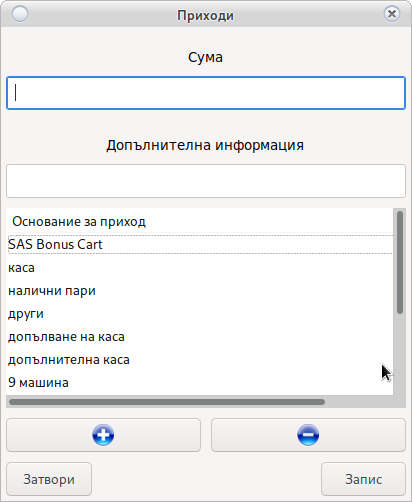
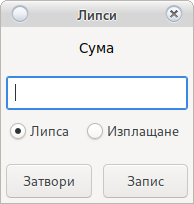
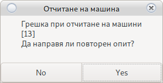

Модул Отчети
Система за отчитане на крупие
В случай че излезе съобщение

Погледни Начало на Смяна
Приходи

Въвежда се сумата на прихода.
Избира се Основание за прихода, и ако има се въвежда допълнително информация.
- Основание
- Шефа донесе ми пари
- Сервиза ми върна ресто
- Информация
- Жената на шефа
- Техник
Ако основание липсва:
Бутон 
Добавя ново основание.
Бутон 
Премахва избраното основание.
Имената на основанията са уникални и разпознават малки и ГЛАВНИ букви.
Внимание!
Премахването на основание не го изтрива, само го скрива.
Не забравяйте, че имената са уникалниИнформация!
При грешка можете да поправите с двоен клик на прихода
Трансфери
Система за прехвърляне на пари от един потребител към друг.
Това в вътрешен трансфер на пари от потребител X към потребител Y

Въведете сумата и изберете потребител към който ще правите трансфер.
Изберете основание. За не заложени основания изберете друго и въведете описания.
Изисква потвърждение от потребител Y
Внимание!
Посочената сума се приспада от касата на потребител X и се зачислява в касата на потребител Y
Разходи
Въвежда се сумата на разход.
Избира се Основание за разход, и ако има се въвежда допълнително информация.
- Основание
- Сервиза ми иска пари
- Дойде куриер
- Информация
- Еконт, Спиди
- Техник
Ако основание липсва:
Бутон
Добавя ново основание.
Бутон
Премахва избраното основание.
Имената на основанията са уникални и разпознават малки и ГЛАВНИ букви.
Внимание!
Премахването на основание не го изтрива, само го скрива.
Не забравяйте, че имената са уникалниИнформация!
При грешка можете да поправите с двоен клик на разхода
Липси
Система за отчитане на липси на потребители

Въвежда се сума и се избира тип.
-
Липса
Изважда сумата от касата на крупието и завежда липса
-
Изплащане
Добавя сумата към касата на крупието и я приспада от доведените липси
В случай, че крупието не изплати липса в рамките на месец и се наложи спиране от възнаграждението, то трябва да уведомите крупието и да предоставите сума за да бъде премахната от липсата чрез изплащане.
Внимание!
Само потребителя на когото принадлежи липсата може да я премахне.
Можете да премахнете липса заредите потребител
Сумата ще бъде добавена в касата на крупието и физически парите трябва да му бъдат дадени.
Отчет
Система за електронно отчитане на машини.
Автоматично взима всички броячи и блокира работата на била Погледни
Всички машини ще бъдат показани в Основен прозорец
Машините отчетени по електронен път не могат да бъдат редактирани
В случай на грешка

-
Машината не работи
Не е нужен втори опит. Изберете No и отчетете ръчно
-
В случай на временно прекъсване
Изчакайте 10-15 секунди и натиснете Yes
Системата ще направи повторен опит за отчет.
В случай на неуспешен повторен опит системата ще избере ръчен отчет
Ръчен отчет
Ръчно отчитане на машини. Използва се за машини без възможност за свързване към системата или за машини с технически проблем.

Внимание!
Не затваряйте прозореца преди да сте отчели всички машини.
Ако бъде затворен, машините с повреда ще изчезнат.
Ще се наложи повторно пискане на отчет
С двоен клик отваря прозорец за отчитане на съответната машина

При проблем с SMIB контролера въведете електронните броячи в полетата.
В случай на повреда на машина изберете опцията отчет по механични броячи. Въведете механичен вход и механичен изход. В полето бил въведете сумата която намерите в касетата на машината.
Внимание!
В зависимост от датата на последното поправяне на механични броячи
е възможно разминаване.
За да се избегнат разминавания следващият отчет задължително ще бъде ръчен.
Въведете електронни броячи.Информация!
При грешка можете да поправите с двоен клик на отчетената машина
Бил
Система за управление на била. Системата следи парите в касетата. Ако бил не бъде изваден то той ще се натрупва. Натрупания бил се зачислява в касата на потребителя който го вади и се занулява от касетата на машината.

С двоен клик се маркират машините от които била ще бъде изваден и те ще станат
Зелени
След като извадите парите от касетите на посочените машини се избира се бутона Извади
Пари се броят задължително!
Край на смяна
Приключване на смяната на крупие. Ще занули касата и всичко извършено през текущата смяна.
Внимание!
Само когато целия отчет е завършен и всичко е точно до стотинка
След край на смяна редакция е невъзможна.Информация!
Системата ще генерира служебен разходи ордер
Печат на РКО
Отпечатва разходен ордер за крупието. Разходния ордер съдържа цялата информация чрез която се изчислява касата на крупието.
Зареди Крупие
С двоен клик на името в горен ляв ъгъл на основния прозорец можете да заредите потребител за да проверите какви действия е извършил в профила си по време на отчет или да редактирате в случай, че потребителя няма права за достъп.

Информация!
Заредения потребител ще придобие вашите права за достъп.
Съобщения
Погледни Съобщения